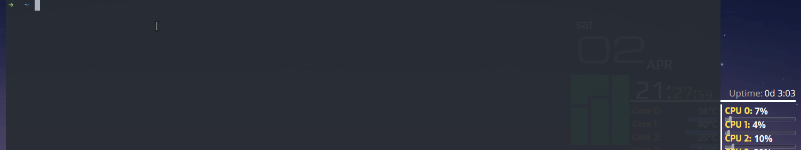

fcitx5-rime 小鹤音形隐藏打字候选窗
对于使用小鹤音形的用户来说，除使用通配符、查看部件、小字这几种常用情况外，打字时的候选窗通常是没有必要的。对于 Android 和 Windows 系统，小鹤音形官网提供了他们的输入法软件，使用户在隐藏打字候选窗的情况下，当用户使用通配符或查看部件及字根时，候选窗则会自动显示出来。
对于其他平台(Linux或Mac)的小鹤音形用户，一般是借助 rime 来实现小鹤音形的挂接，此时要隐藏候选窗便要 rime 及其相应的输入法框架提供支持。本文将以 fcitx5-rime 为例介绍如何快速地隐藏和开启打字候选窗。
1、前言
之前在「fcitx5-rime 挂接小鹤音形 」文中便有对fcitx5-rime 小鹤音形的使用进行过介绍，文末当时说了「不太好配置隐藏候选窗」，这倒是真的。在使用 fcitx5 之前，我用的是 fcitx(fcitx4)，我也不太记得 fcitx4-configtool 能否对打字候选窗进行配置了，唯一能确定的是，候选窗主题色是能配置的。在我使用小鹤音形一段时间后，特别是把 Windows 及 Android 系统下小鹤音形输入法配置成隐藏打字候选窗后，我便开始了把我笔记本 Manjaro 里的 rime 小鹤音形也隐藏候选窗的想法。然后在网上搜索了相关关键字后，发现有人居然是通过将候选窗背景等配色调透明来实现的，经过一番思索后，且不说方案在 Linux 下 fcitx5-rime 中能否可行，我觉得它并不适合我。即便不好做到如同小鹤音形官网提供的输入法那般，但也最好要做到能快速进行候选窗开关切换，因此便有了本文的方法🤔。
2、fcitx5 隐藏候选窗实现思路
从 fcitx5-configtool 中，我们是可以配置插件的(Configure addons)，不难发现，UI 下的 Classic User Interface 便用于配置程序的用户界面的，如更改主题色等，当然也直接选择将该插件关闭或打开，从而实现输入法候选窗的开关。
因此，我先是在 fcitx5-configtool 启用和禁用 Classic User Interface ，然后观察 fcitx5 的配置文件(位于 ./config/fcitx5)变化情况，发现当禁用 Classic User Interface 插件时，./config/fcitx5/config 配置文件中增加了以下配置：
1 | [Behavior/DisabledAddons] |
那么该插件的名称便是 classicui，再根据 fcitx5 --help:
1 | Usage: fcitx5 [Option] |
因此，我们可以借助一个文本配置文件记录当前打字候选窗禁用状态(0未禁用/1已禁用)，结合 fcitx5 --enable/--disable classicui -r 来快速地启用或禁用打字候选窗。
3、最后
基于以上思路，我简单地写了一个脚本，可至 「fcitx5-classicui-switcher 」进行安装及使用，更多定制化功能也可自行修改。采用我的实现方案，效果大致如下：
